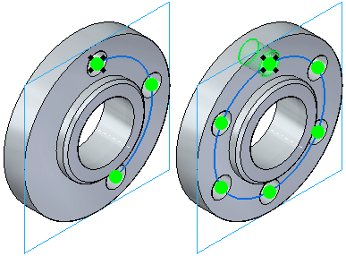
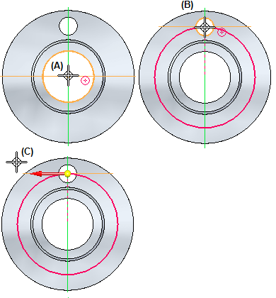
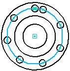

Circular patterns
Specifying a circular pattern type
You can create circular patterns with the Pattern command (3D features)  . With the profile window open, select the Circular Pattern button on the Features tab. You can also draw lines, arcs, and other elements as construction geometry to
help you define the pattern profile.
. With the profile window open, select the Circular Pattern button on the Features tab. You can also draw lines, arcs, and other elements as construction geometry to
help you define the pattern profile.
Any lines, arcs, and circles you draw will be automatically converted to construction geometry when you close the profile window.
Circular patterns
You can construct partial or full circular patterns.

When drawing the pattern arc or circle, you specify a center point (A), a start point (B) and a direction (C).

The center point defines the center of the pattern arc or circle and also defines the axis of rotation for the feature you are patterning.
The start point defines the radius of the pattern circle. The physical size of the pattern circle has no impact on the pattern you are placing.
The direction controls whether the pattern occurrences are copied in a clockwise or counter-clockwise direction.
You can construct circular patterns with the following placement options:
-
Fit
-
Fill
-
Fixed
The Fit and Fill options are available with both partial and full circular patterns. The Fixed option is only available when placing partial circular patterns.
-
Fit example
With the Fit option, you specify the number of occurrences, and the radius of the pattern circle. If you specify a partial circular pattern, you also specify the sweep angle of the arc. The angular Spacing value on the command bar is calculated automatically, is read-only, and it is not required to be a whole number.
-
Fill example
With the Fill option, you specify the angular spacing, and the radius of the pattern circle. If you specify a partial circular pattern, you also specify the sweep angle of the arc. The Count value on the command bar is calculated automatically, is read-only, and will always be a whole number.
The Fill option fills the area, but does not place the last occurrence if the theoretical Count value is not a whole number, and the product of the angular Spacing times the Count minus 1 exceeds 360° for full circular patterns.
For example, you can create a full circular pattern with an angular Spacing of 47°, and still have a total of 8 occurrences in the pattern, since 7 times 47 equals 329. The angular spacing between the last occurrence and the parent feature will be 31°.

-
Fixed example
With the Fixed option, you specify the you the number of occurrences, the angular spacing, and the radius of the pattern circle. The Sweep value on the command bar is calculated automatically, is read-only, and it is not required to be a whole number.
How do I
Construct an ordered rectangular pattern featureCreate a 2D rectangular pattern of sketches
Construct an ordered circular pattern feature
Create a 2D circular pattern of sketches
Construct a Fast Pattern
Construct a Smart Pattern
Define the pattern plane
Learn more
Pattern featuresRectangular Pattern (ordered)
Look up more details
Pattern command (ordered)Rectangular Pattern command bar (ordered sketch)
Circular Pattern command bar (ordered sketch)
Pattern command bar